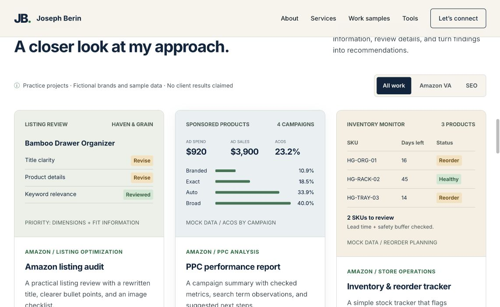
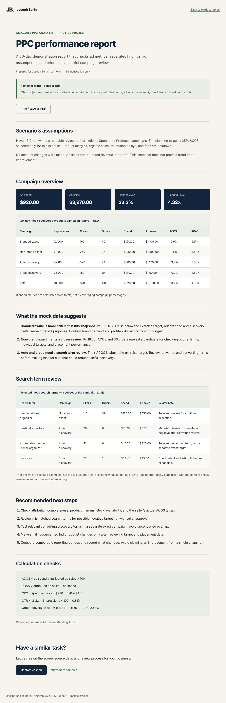

Sample 03 / SEO support
Portfolio SEO and content audit
An evidence-based review of Joseph’s own live portfolio, with proposed SEO, content-quality and inquiry-flow improvements.
01 / Main recommendation
Keep the existing metadata foundation. Clarify the main offer, publish useful research case studies on their own pages and make the content internally consistent. Measure search visibility only after Search Console data is available.
02 / What is already present
| Check | Observed result | Meaning |
|---|---|---|
| Page title and description | Both present in the live homepage DOM. | There is no evidence of missing homepage metadata. |
| Canonical | Homepage points to https://josephberinyourva.site/. | A preferred URL is declared; Google’s selected canonical was not checked. |
| Main heading | One homepage H1. | The recommendation concerns clarity, not a missing H1. |
| Portrait alt text | Descriptive alt text present. | Preserve it; no need to invent an image-alt defect. |
| Home robots meta | No robots meta tag found. | No meta noindex found on the homepage. HTTP headers and actual Google indexing remain unverified. |
| Structured data | Person JSON-LD present. | Presence is confirmed; no rich-result eligibility or Google validation is claimed. |
03 / Prioritized action log
High means correct before sharing the portfolio widely. Medium means useful for clarity, discoverability or inquiry completion. Low means a presentation enhancement. These are editorial priorities, not measured ranking impacts.
| Area | Priority | Observed evidence | Recommendation | Completion check |
|---|---|---|---|---|
| 01 · Content clarity | Medium | The homepage H1 is a personal greeting; the service appears in a separate paragraph. | Use a service-led H1 while keeping Joseph’s introduction nearby. This is an opportunity, not proof of an SEO penalty. | Inspect the final H1 and opening copy on desktop/mobile. |
| 02 · Searchable evidence | Medium | The inspected PPC sample contains noindex,follow. The local deployed package uses this for all six demonstration reports. | Keep fictional reports excluded. If new research case studies are intended for search, publish them on distinct indexable URLs with unique metadata. | Check rendered robots/canonical tags; then use Search Console URL Inspection if access is available. |
| 03 · Content accuracy | High | The homepage PPC preview displays $3,900 while its report displays $3,970. | Make the preview agree with the report. Classify this as portfolio quality, not a proven ranking issue. | Compare the two rendered values after the edit. |
| 04 · Lead capture | Medium | The contact area explicitly opens an email draft. It does not submit an inquiry on the site. | Add a direct submission service if desired, with visible success and failure states. | Send an authorized test inquiry and verify receipt. This is a conversion task. |
| 05 · Social sharing | Low | No og:image tag was found in the homepage DOM. | Add a suitable social preview image and image metadata. | Inspect a fresh share preview. This is presentation work, not a Google ranking fix. |
04 / Concrete copy handoff
Amazon Virtual Assistant for Listing Research and Optimization
Supporting line: I help Amazon sellers organize product information, draft clear listing content and turn keyword research into practical next steps.
Amazon Virtual Assistant & SEO Support | Joseph Berin
Suggested description: Work with Joseph Berin for Amazon listing research, content drafts and organized reporting. Explore independent work samples and discuss your next project.
This is a positioning choice for the Amazon-first offer. The current title is already descriptive. No automatic ranking gain is implied by changing its order.
05 / Proposed page and intent map
| Target intent | Proposed page | Distinct content needed | Status |
|---|---|---|---|
| Hire Amazon VA support | Homepage | Service scope, work samples and a clear contact route. | Existing page; copy proposal only |
| Evaluate listing review capability | /amazon-listing-review.html | Actual research, sources, copy draft and validation approach. | Proposed URL; not live |
| Evaluate keyword research capability | /amazon-keyword-research.html | Method, relevance decisions and downloadable workbook. | Proposed URL; not live |
| Evaluate SEO audit capability | /portfolio-seo-review.html | Observed issues, evidence, limitations and completion checks. | Proposed URL; not live |
These are intent hypotheses, not volume-backed targets. Publish only pages with distinct value; do not create thin copies solely to target keyword variations.
06 / Evidence appendix
Live metadata observations
{
"title": "Joseph Berin | Amazon Virtual Assistant & SEO Support",
"description": "Joseph Berin, a Philippines-based Amazon Virtual Assistant and SEO support provider. Explore listing audits, PPC reports, inventory trackers, and SEO work samples.",
"canonical": "https://josephberinyourva.site/",
"robots": "not present",
"h1": [
"Hi, I’m Joseph."
],
"ogImage": "not present"
}Extracted from the rendered homepage DOM. “Not present” refers only to the checked tag, not to every possible directive or external system.


Supporting file context
The saved deployment package contains an allow-all robots.txt and a sitemap listing the homepage. A fresh browser request for robots.txt was blocked by the browser client, so its current live response was not verified. The six local demonstration report files have a noindex directive; this was also confirmed live for the PPC report.
07 / What to measure after implementation
- Use Search Console, with owner access, to confirm coverage and inspect the intended canonical URLs.
- Record query and page impressions, clicks, CTR and position for consistent date ranges. Separate branded and service-related queries.
- Track completed inquiries separately from contact-button clicks. Opening an email application is not a confirmed lead.
- Log publication dates and other changes. Avoid claiming that a ranking or lead change was caused by one copy edit without stronger evidence.
Not assessed: backlinks, search demand, crawl logs, Core Web Vitals, server response headers, exhaustive link health or actual Google indexation. No search-performance baseline or improvement has been invented.
Sources
- Live portfolio homepage and live PPC report.
- Published source version used for supporting file inspection.
- Google SEO Starter Guide — descriptive content, titles and links.
- Google canonical URL guidance — a declaration does not prove Google’s selection.